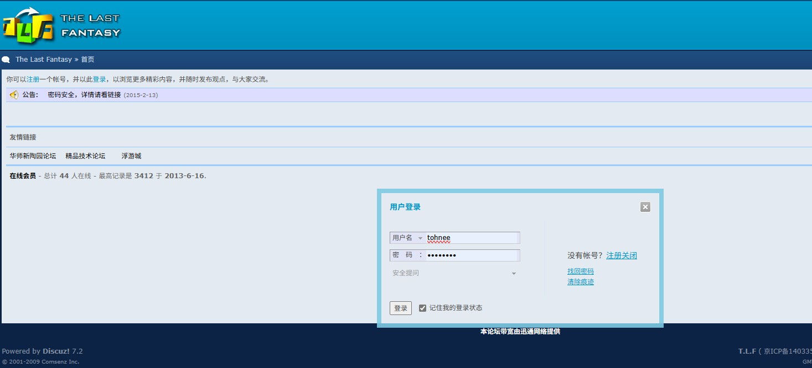
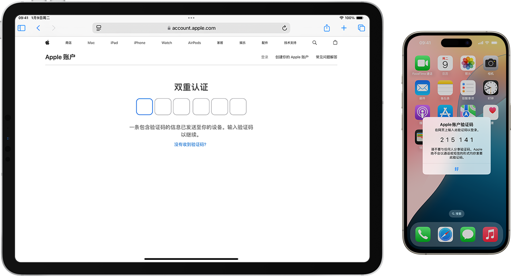
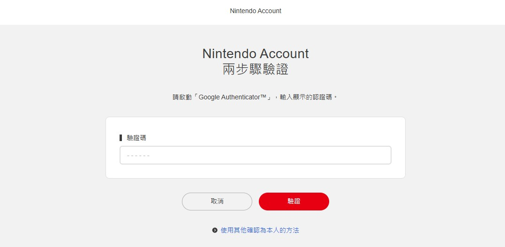

第三章 计算机常用云服务及使用
第三章 计算机常用云服务及使用
3.1 云服务介绍
云服务（Cloud Services）是基于互联网的计算模式，允许用户远程访问和使用计算资源，如存储空间、计算能力和各种软件/通用服务。随着互联网基础设施的发展、数据需求的爆炸式增长以及企业对成本效率的追求，云服务在过去十几年中迅速普及。
主要的云服务类型包括：
- IaaS (Infrastructure as a Service) - 基础设施即服务，例如 Amazon Web Services (AWS), Google Cloud Platform (GCP), Microsoft Azure；
- PaaS (Platform as a Service) - 平台即服务，例如 Colab, deepnote, Heroku；
- SaaS (Software as a Service) - 软件即服务，例如 Disney+, Microsoft 365, Apple Store；
3.1.1 常见账号管理方法
一般而言，云服务的核心价值在于能够根据用户的身份提供个性化的体验、进行精细化的收费管理，并在保障用户隐私的前提下运作。为了实现这些目标，一个健全且安全的基于身份的用户管理模式至关重要。
1. 个性化 (Personalization)
基于身份的用户管理是实现云服务个性化的基石。通过识别用户的身份，云服务可以：
- 提供定制化的服务和功能： 某些云服务可能根据用户的身份（例如会员等级、地理位置、职业等）提供不同的功能或服务。例如，高级会员可能享有更高的存储空间、更快的下载速度或独占内容；
- 定制内容推荐： 了解用户的偏好、历史行为（例如观看记录、购买记录、搜索记录等），从而推送更符合其兴趣的内容。例如，流媒体服务会根据用户的观看历史推荐电影和电视剧，电商平台会推荐用户可能感兴趣的商品；
- 个性化用户界面和体验： 不同的用户可能需要不同的界面布局、功能设置或访问权限。基于身份的管理可以实现用户自定义界面、保存个性化设置，提供更符合其使用习惯的体验；
- 学习用户行为并优化服务： 通过追踪不同身份用户的行为模式，云服务可以不断优化自身的功能和服务，例如改进搜索算法、优化推荐策略、调整产品设计等；
2. 收费 (Billing)
基于身份的用户管理是云服务实现灵活收费模式的关键：
- 区分用户类型和定价策略： 云服务可以根据用户的身份（例如个人用户、企业用户、学生用户）采用不同的定价策略；
- 实现订阅和会员管理： 通过用户身份识别，云服务可以管理用户的订阅状态、会员等级、支付信息等，并根据订阅周期或会员权益提供相应的服务；
- 提供增值服务和升级选项： 基于用户的身份，云服务可以向其推荐或提供额外的增值服务和升级选项，例如增加存储空间、解锁高级功能等；
- 追踪使用情况并计费： 基于用户的身份，云服务可以精确地追踪其资源使用情况（例如存储空间、计算时长、API 调用次数等），并根据设定的计费规则进行收费；
- 处理退款和账单争议： 用户的身份信息是处理账单查询、退款申请等事务的重要依据；
三种基本的收费模式：
- 月租费：每个月固定的收费；
- 用量收费：按照每个月的使用情况收费；
- 月租费+用量收费：每个月有固定的费用，超出部分按照用量进行收费；
当然，还有按照季度和年进行收费的方式，这个一般认为是月租费的一种变体。
**隐私 (Privacy)
在提供个性化和收费服务的同时，保障用户隐私至关重要。基于身份的用户管理需要在以下方面考虑隐私保护：
- 数据最小化原则： 只收集和存储与提供服务和用户管理直接相关的必要用户信息；
- 透明度和用户控制： 清晰地告知用户收集哪些数据、如何使用这些数据，并提供用户控制其隐私设置的选项，例如允许用户查看、修改或删除自己的数据；
- 数据安全和加密： 采取严格的安全措施（例如数据加密、访问控制、安全审计等）保护用户身份信息和相关数据的安全，防止数据泄露和未经授权的访问；
- 合规性： 遵守相关的隐私法律法规（例如 GDPR、CCPA 等），确保用户数据的处理符合法律要求；
- 匿名化和去标识化： 在进行数据分析和模型训练时，尽可能对用户身份信息进行匿名化或去标识化处理，以保护用户隐私；
- 用户同意和授权： 在收集和使用用户敏感信息时，需要获得用户的明确同意和授权；
3.1.2 常见的账号安全管理方式
使用这些云服务一般需要通过账号和密码的方式，来验证用户的身份。随着技术的进步，不同的服务采用不同的账号和密码管理方式：
老的方法
- 用户名+密码： 这是一种最为古老的云服务的用户验证方式，现在除了部分遗留的 BBS 服务外，这种验证身份的方式已经被逐渐弃用；

- 用户名+密码+手机验证码： 这种方式由于加入了手机发送的一次性验证码，安全性比第一种方式大大提高，目前还在被使用，但是也慢慢被新的验证方式所取代；
新的方法
概述
新的方法大部分是基于用户已有的一种公开服务，通常是用户自己的 email 地址，比如jackxu@icloud.com作为用户的身份信息。采用 email 地址而不是用户自己设置的用户名最大的好处是用户在遗忘密码的时候，可以通过 email 地址重新设置自己的密码。 比如 Disney+ 的服务就需要使用一个 email 地址和密码来使用相关的服务。
关注重点
通过以上可以知道，现代云服务为了简化用户管理和提供便捷的密码找回机制，越来越倾向于采用用户已有的公开服务账号，特别是用户的 Email 地址作为其主要的身份标识。像 Disney+ 这样的服务，正是通过用户的 Email 地址和密码来建立和管理用户账户。对所有服务的安全，完全依赖于用户选用的哪个公共服务的身份地址，并且需要确保这个身份地址的安全性。当云服务选择用户的email 地址作为其身份认证的基础时，这个 email 账号就不再仅仅是一个接收邮件的工具，而是成为了用户访问所有相关云服务的数字身份钥匙。一旦这个钥匙被盗或泄露，后果将不堪设想：
- 直接威胁所有关联的云服务： 攻击者一旦控制了用户的 email 账号，就可以利用云服务提供的密码重置功能，轻易地重置该用户在 Disney+、社交媒体、在线购物平台、甚至一些金融服务等所有使用该 email 地址注册的账户密码。这就像一把万能钥匙打开了用户在数字世界的无数道门；
- 个人信息的全面暴露： email 账号往往关联着用户的各种个人信息，包括姓名、联系方式、账单地址，甚至可能关联着用户的其他社交媒体账号和云存储服务。一旦 Email 账号失守，这些敏感信息将完全暴露在攻击者面前，可能导致身份盗窃、财产损失等严重后果；
- 服务中断和数据丢失： 攻击者可能会利用控制的 email 账号修改用户的服务设置、删除重要数据，甚至直接关闭用户的云服务账户，导致服务中断和数据丢失；
-
- 难以追踪和恢复： 一旦多个云服务账户被攻陷，用户可能难以快速识别所有受影响的服务，并逐一进行恢复，增加了应对安全事件的复杂性和难度；
- 社会工程攻击的跳板： 攻陷用户的 email 账号后，攻击者可以利用该账号发送钓鱼邮件或恶意链接给用户的联系人，进一步扩大攻击范围，进行更复杂的社会工程攻击。而且这些攻击从法律上来说，造成破坏的不是攻击者，而是用户本人；
采用的安全措施
用户需要采取的关键安全措施包括：
- 为 Email 账号设置强壮且唯一的密码，绝不在其他服务上重复使用；
- 务必启用 Email 账号的双重或多因素认证（2FA/MFA），为登录增加额外的安全屏障；
- 定期检查 Email 账号的登录活动和安全设置，留意任何异常情况；
- 警惕任何通过 Email 发送的可疑链接或附件，谨防钓鱼攻击；
- 不要在不安全的网络环境下登录 Email 账号；
- 考虑使用独立的、安全性更高的 Email 服务提供商；
不同的验证方式
1. 可信设备的辅助验证： 可信的辅助验证是一种双重认证的手段。采用这种方式最典型的场景是 Apple iCloud+ 的ID的验证。因为 Apple 的 iCloud ID 服务不仅仅是提供给用户使用，而且很多其他的云服务也会使用 Apple 的 iCloud ID 作为验证身份的重要手段。所以 Apple 的这种验证是相当严格的。用户除了要提供 Apple ID, 密码还需要在一台可信的设备上（该设备绑定在指定的 Apple ID 账户上）进行二次确认。所谓的可信的设备，是指的已使用双重认证登录的 iPhone, iPad, Apple Watch, Apple Vision Pro 或 Mac。 Apple 知道这是你的设备。当用户在其他设备或浏览器上登录时，这台设备会显示来自 Apple 的验证码，从而可用于验证你的身份。

1. Apple 账户的双重认证 - 官方 Apple 支持 (中国)
2. 基于 App Authenticator 的双重认证：
简单来说，它在传统的用户名和密码之外，增加了一层额外的安全验证。你需要通过一个安装在你手机上的身份验证 App (Authenticator App) 来生成一个一次性的验证码，才能成功登录。
它是如何工作的呢？
- 设置阶段：
- 当你在某个网站或应用上启用双重认证时，通常会看到一个二维码或者一串密钥；
- 你需要使用你的身份验证 App 扫描这个二维码或者手动输入这个密钥；
- App 会将这个信息与你的账户关联起来；
- 登录阶段：
- 当你输入用户名和密码尝试登录时，网站或应用会要求你输入一个来自身份验证 App 的验证码；
- 你的身份验证 App 会基于一个时间和共享的密钥，每隔一段时间（通常是 30 秒）生成一个新的、唯一的验证码；
- 你需要在验证码过期之前将其输入到登录界面；
- 只有当你的用户名、密码和验证码都正确时，你才能成功登录；

1. 可信设备的辅助验证： 可信的辅
3.2 Jet brains Dataloare（未完成）
3.3 Google Colab 服务（未完成）
3.4 GitHub 服务（未完成）
3.5 OneDrive 服务（未完成）
3.6 Hexo 服务
Hexo 是一个快速、简洁且高效的开源博客框架， 它是一个基于 Node.js 的静态网站生成器，完全免费使用。由于生成的是纯静态文件，网站访问速度快，安全性高，服务器资源占用少。他的主要特点和优势包括如下：
- 极快的生成速度： Hexo 以其出色的生成速度而闻名，即使有大量的文章，也能在短时间内完成生成；
- 支持 Markdown： 使用 Markdown 语言写文章，语法简单，易于上手；
- 丰富的插件系统： Hexo 拥有强大的插件 API，可以通过安装各种插件来扩展功能，如生成 RSS Feed、网站地图、本地搜索、加密文章等；
- 多样化的主题： 社区提供了大量精美的主题供选择，你可以轻松切换主题来改变博客的外观，也可以自己开发主题；
- 易于部署： 内置了多种部署工具，通过简单的命令就可以将网站部署到各种平台；
Hexo 的核心理念和工作流程如下：
- 静态网站生成器： Hexo 不像 WordPress 或其他动态博客系统那样需要数据库和服务器端脚本（如 PHP）。它做的事情是把你用 Markdown（或其他标记语言）写好的文章，配合你选择的主题，通过特定的渲染引擎处理后，生成一套纯静态的 HTML, CSS, JavaScript 文件；
- 生成与部署： 生成的这套静态文件可以非常方便地部署到各种支持静态页面的托管服务上，比如 GitHub Pages, GitLab Pages, Netlify, Vercel 等，这些服务的特点是快速、稳定且通常对静态网站提供免费或低成本的托管;
- 典型的工作流程：
- 安装 Node.js, Hexo；
- 创建一个新的博客项目 （
hexo init）； - 在
source/_posts文件夹下用 Markdown 写文章； - 选择并配置一个主题；
- 运行
hexo generate命令生成静态文件； - 运行
hexo server在本地预览； - 运行
hexo deploy将生成的静态文件部署到你的网站空间；
3.6.1 安装 Hexo 服务
1 | # 1. 安装node.js |
1 | > npm install -g hexo-cli |
npm install：这是 npm 的安装命令；-g：这个标志表示全局安装，使得hexo命令可以在系统的任何位置被调用；hexo-cli：这是 Hexo 的命令行接口包的名称；
验证安装：
安装完成后，你可以运行以下命令来验证 Hexo 是否成功安装并查看其版本号：
1 | hexo version |
如果命令成功执行并显示 Hexo 的版本信息，说明你已经成功安装了 Hexo CLI。接下来，你就可以使用hexo init命令来初始化你的博客项目了。
3.6.2 如何初始化一个Hexo项目
在系统中安装完Hexo之后，我们可以开始初始化一个Hexo的博客项目，初始化 Hexo 项目的命令是 hexo init，比如我们计划初始化的博客项目叫做MyFirstBlog。
- 选择一个位置： 打开你的终端或命令行工具，导航到你想要创建Hexo博客项目的文件夹的父目录。例如，如果你想在
~/Documents/MyBlog这个文件夹里创建博客，那么你应该先cd到~/Documents目录； - 运行初始化命令： 在你希望创建博客的父目录中，运行以下命令：
1 | > hexo init <folder> |
-
<folder>：这是你想要创建的博客项目文件夹的名称。将<folder>替换为你想要的名称，例MyFirstBlog；如果你想在当前目录直接初始化项目（不创建新的子文件夹），可以省略
<folder>：
1 | > hexo init |
执行 hexo init 命令后，Hexo 会在指定的<folder>目录下（或当前目录）创建一个新的博客所需的全部文件和文件夹结构，包括：
_config.yml（站点配置文件）package.json（npm 包管理配置文件）scaffolds（文章模板文件夹）source（存放文章、页面等源文件）_posts（存放博客文章）
themes（存放主题文件，默认会下载一个主题）.gitignore（Git忽略文件）
其他注意事项
如果网站启用post-asset-folder: true，需要注意的是，默认 Hexo 提供的渲染引擎hexo-renderer-marked可能导致渲染后，图片的路径有问题。如果有这种情况，需要卸载默认的渲染引擎，使用hexo-renderer-markdown-it来代替。
1 | npm uninstall hexo-renderer-marked |
3.6.3 运行博客网站
进入项目文件夹： 初始化完成后，你需要进入刚刚创建的博客项目文件夹，比如：~/Documents/MyBlog文件夹中，运行：
1 | hexo clean; hexo g; hexo s |
3.6.4 安装Hexo主题
Hexo提供了几百个不同的Hexo主题，我们这里介绍安装butterfly这个主题。后面的个性化配置我们也是按照这个主题来进行配置。请确保你当前处于你的Hexo博客项目的根目录下（也就是包含_config.yml、source、themes 等文件夹的目录）。
- 克隆Butterfly主题到
themes文件夹： 打开终端或命令行工具，运行以下Git命令将Butterfly主题仓库克隆到你Hexo项目的themes文件夹内；
1 | > git clone -b master https://github.com/jerryc127/hexo-theme-butterfly.git themes/Butterfly |
-b master: 指定克隆master分支；https://github.com/jerryc127/hexo-theme-butterfly.git: Butterfly主题的Git仓库地址；themes/Butterfly: 指定克隆到Hexo项目根目录下的themes文件夹内，并将文件夹命名为Butterfly；
- 安装主题所需的依赖： Butterfly主题通常需要
hexo-renderer-pug和hexo-renderer-stylus这两个渲染器来解析主题文件。在你的Hexo项目根目录下运行以下命令安装它们：
1 | npm install hexo-renderer-pug hexo-renderer-stylus --save |
- 修改Hexo配置文件，启用Butterfly主题： 打开你Hexo项目根目录下的主配置文件
_config.yml(注意不是themes/Butterfly里面的配置文件)。找到theme:这一行，将其值修改为Butterfly(注意大小写，必须和你克隆到themes文件夹里的文件夹名称一致)；
1 | # Site |
- 清理、生成并运行Hexo： 保存
_config.yml文件后，运行以下命令来清理缓存、生成静态文件并在本地启动服务器进行预览：
1 | > hexo clean; hexo g; hexo s |
运行hexo s后，访问http://localhost:4000（默认地址）应该就能看到应用了Butterfly主题的博客了。
-
使用theme_config配置主题：使用
theme_config在主_config.yml中指定主题配置文件是一种非常推荐的做法，尤其对于像Butterfly这样配置项很多的主题。这样做的好处是，当你更新主题时，可以直接替换或更新themes/Butterfly文件夹下的文件，而不会丢失你的个性化配置，因为你的配置保存在主目录下的另一个文件中。- 找到主题的默认配置文件： 进入你的Hexo项目目录下的
themes/Butterfly/文件夹。你会在这里找到Butterfly主题的默认配置文件，它的名字通常是_config.yml； - 复制主题配置文件到Hexo项目根目录： 将
themes/Butterfly/_config.yml这个文件复制到你Hexo博客项目的根目录下（也就是和主_config.yml、source、themes等文件夹同级的地方）； - 重命名复制的文件（推荐）： 为了清晰地知道这个文件是哪个主题的配置，建议将刚刚复制到根目录下的文件重命名，一个常见的命名约定是加上主题的名字，比如命名为
_config.butterfly.yml； - 修改主
_config.yml文件： 打开你Hexo项目根目录下的主配置文件_config.yml。在文件的任意位置（通常习惯放在最后面，或者主题配置附近）添加或修改theme_config这个配置项，并将其值设置为你刚刚重命名后的文件路径；
1
2
3
4
5
6
7
8
9
10
11# Main Hexo config file (_config.yml)
# Site
# ... other main site configurations...
# Theme
theme: Butterfly # 确保这里是 Butterfly
# Theme Configuration
# 指向你的 Butterfly 主题配置文件
theme_config: _config.butterfly.yml # 目前需要起这个名字请确保
theme_config后面的文件路径是相对于你 Hexo项目根目录的。如果你将文件命名为_config.butterfly.yml并且放在了根目录下，那么值就是_config.butterfly.yml。完成以上步骤后：
- Hexo 在生成网站时，会先加载
themes/Butterfly/_config.yml中的默认配置。 - 然后，它会加载你在
theme_config中指定的_config.butterfly.yml文件中的配置。 _config.butterfly.yml中的配置项会覆盖掉themes/Butterfly/_config.yml中同名的配置项。- 最终生效的主题配置是两者合并后的结果，以
_config.butterfly.yml中的为准。
以后，所有你想对 Butterfly 主题进行的配置修改，都应该在根目录下的
_config.butterfly.yml文件中进行，而不要去修改themes/Butterfly/_config.yml文件。这样做的好处是，即使你以后通过
git pull或其他方式更新themes/Butterfly文件夹下的主题代码，你的自定义配置 (_config.butterfly.yml) 也不会受到影响，保持了配置的独立性和可维护性。 - 找到主题的默认配置文件： 进入你的Hexo项目目录下的
3.6.5 配置 front-matter
常用的 front-matter 配置
隐藏某篇文章
在某些情况之下，可能我们需要暂时隐藏某些文章，比如尚未完成的文章。假设我们使用的是 Butterfly 主题，并且希望通过修改文章的 front-matter 来实现暂时隐藏（不让它显示在博客列表、首页等地方），最常见和推荐的方法是结合使用一个 Hexo 插件来读取 front-matter 的特定参数。
通常，这个功能不是 Hexo 核心内置的通过 front-matter 实现的，而是通过主题或插件来实现对文章列表的过滤。对于 Hexo，常用的插件是 hexo-hide-posts。Butterfly 主题也常与这个插件搭配使用来实现此功能。
-
安装
hexo-hide-posts插件： 如果之前没有安装过，请在你的 Hexo 项目根目录下运行以下命令：1
npm install hexo-hide-posts --save
-
配置插件 (通常默认配置即可)： 插件默认会查找 front-matter 中的
hidden: true参数来隐藏文章；1
2
3
4
5
6
7
8
9---
title: 这是一篇需要暂时隐藏的文章
date: 2023-10-27 10:00:00
tags:
******* 隐藏文章 *******
hidden: true # 如果插件配置 filter 为 hidden
---
文章内容...
支持数学公式
3.6.6 配置 butterfly 主题页面
生效 categories
请执行以下命令来创建categories页面：
1 | > hexo new page categories |
接着打开生成的 source/categories/index.md 文件，将其前言区（front-matter）修改为：
1 |
|
最后重新生成并预览
1 | > hexo clean; hexo g; hexo s |
categories 的树状结构
在 Hexo 中使用 树状结构的 categories 是推荐做法，尤其是当使用的是像 Butterfly 这样的主题时，它原生就支持树状分类的展示。只要你在文章的 front-matter 中正确书写多级分类数组，就能自动在分类页展示为树状结构。使用 categories 的“树状结构”方式，能清晰表达文章主题的层级关系，提升导航与阅读体验，是 Hexo + Butterfly 推荐的最佳实践。可以在每一篇 markdown 文件中如下书写：
1 | --- |
以上设置后，在分类页面展示为：
1 | 计算机 |
生效 tags
请执行以下命令来创建tags页面：
1 | > hexo new page tags |
接着打开生成的 source/tags/index.md 文件，将其前言区（front-matter）修改为：
1 |
|
最后重新生成并预览
1 | > hexo clean; hexo g; hexo s |
增加图片的放大功能
- 请将
themes/butterfly/_config.yml中的 lightbox 设置改为：
1 | lightbox: fancybox |
- 正确设置 Fancybox 的 CDN：
1 | CDN: |
3.6.7 发布与保存
配置
- 创建 GitHub 仓库
- 仓库名：与项目名称一致，比如
ai-classroom； - 建议设置为 public
- 仓库名：与项目名称一致，比如
- 安装 Hexo 部署插件
1 | npm install hexo-deployer-git --save |
- 配置
_config.yml中的 deploy 字段：
1 | # 确保发布的静态网页被部署到 GitHub 指定仓库中的 gh-pages 分支 |
操作
1. 初始化 Git，并提交源代码到 GitHub
1 | git init |
这样你的 所有 Markdown 源文件 + 图片 + 配置 都在 main 分支。
2. 部署静态网站到 gh-pages 分支
1 | hexo clean |
这会自动生成 _deploy 文件夹，并推送 public/ 下的静态文件到 gh-pages 分支。
3.设置 GitHub Pages
- 打开 GitHub 项目 → Settings → Pages
- Source 选择：
gh-pages分支 - 保存后你将得到一个访问地址：
https://你的用户名.github.io/ai-classroom/
4. 如何持续写作并同步
每次写完新文章后：
1 | # 提交源文件到 main 分支 |
GitHub仓库结构
| 分支 | 用途 |
|---|---|
main |
保存所有 Markdown 源文件、资源、配置 |
gh-pages |
由 Hexo 自动生成的/public目录下的静态网页（Hexo 自动推送） |
其他
1. 失去CSS
部分情况下，如果_config.yml没有设置好，会导致推送到 GitHub 的页面失去了样式（CSS）。需要对Hexo 项目的 _config.yml（主配置，不是 theme 配置）中添加：
1 | # 注意：不要以 / 结尾！ |
如果已经有这两个配置，需要确认它们是完全正确的：
| 字段 | 说明 | 示例值 |
|---|---|---|
| url | GitHub Pages 的完整 URL | https://alifespace.github.io |
| root | 项目在 GitHub Pages 的子路径 | /ai-classroom/ （注意结尾有 /） |
2. 强制浏览器刷新
部署在GitHub Pages 上时，Hexo + Butterfly 的静态文件会被 GitHub 的 CDN 缓存（Cloudflare/fastly），所以浏览器经常不会马上刷新你更新后的样式或脚本。我们可以通过使用版本参数控制浏览器的刷新动作。该参数在_config.butterfly.yml中设置。
1 | # 每次部署到 GitHub Pages 后，手动修改 `version` 的值（例如换一个日期） |
浏览器和 CDN 都会认为这是新文件，从而重新下载，而不是从缓存中加载。